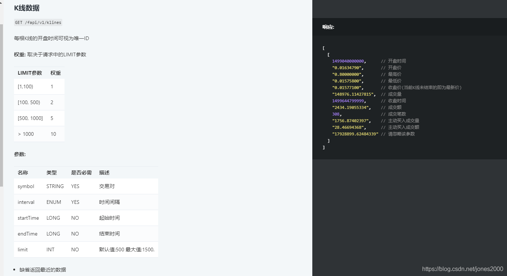
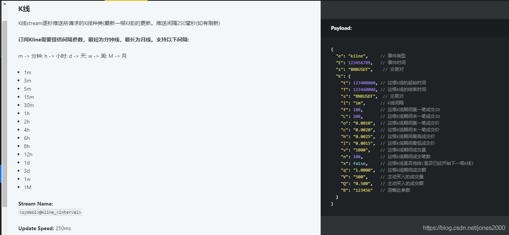
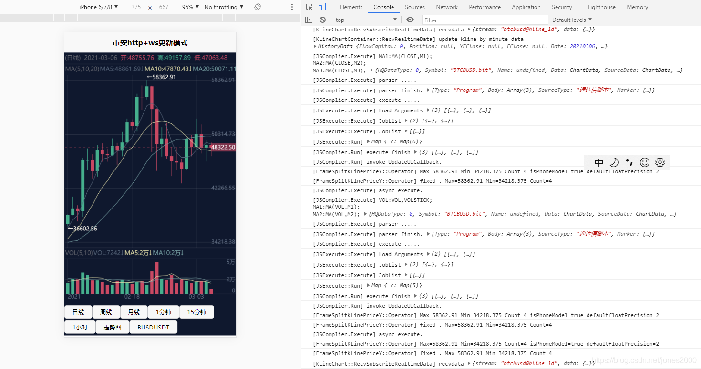
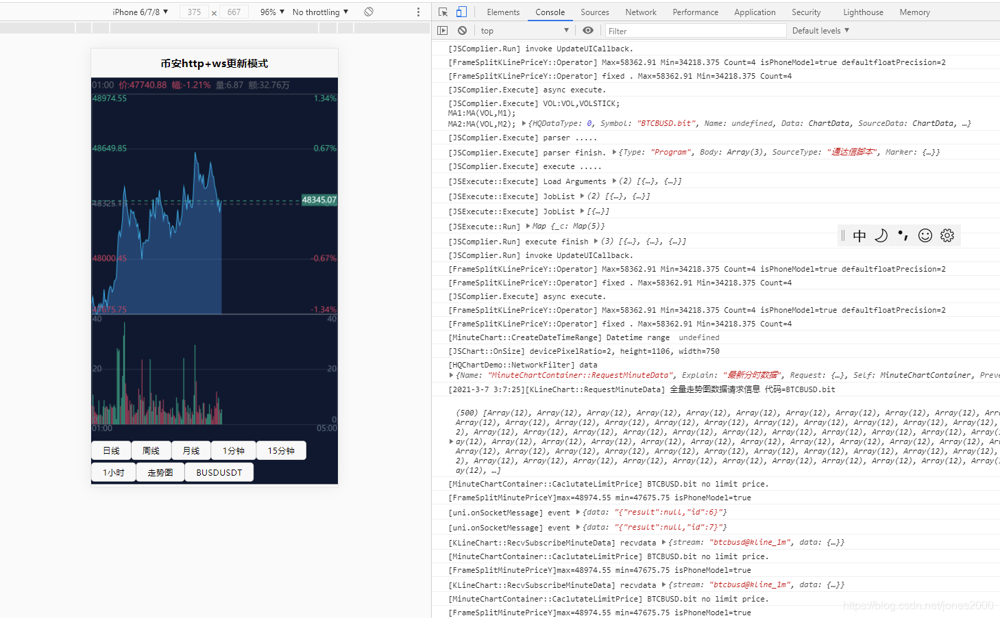
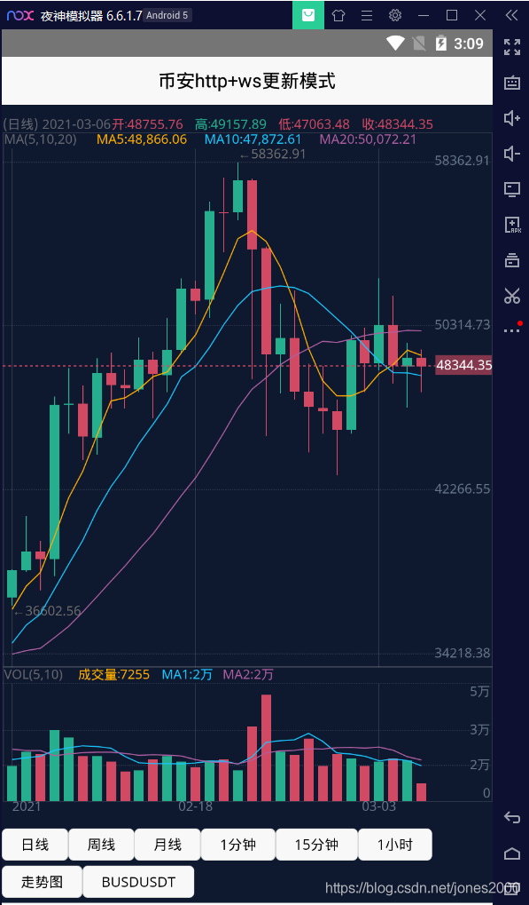
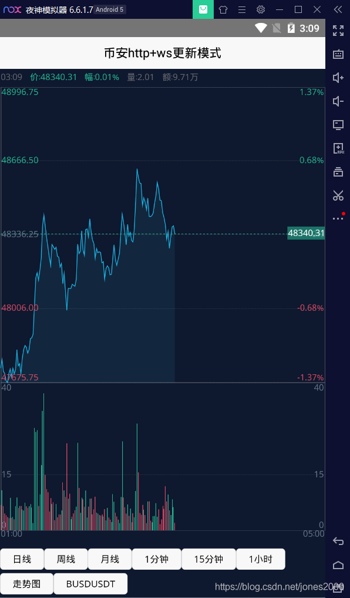
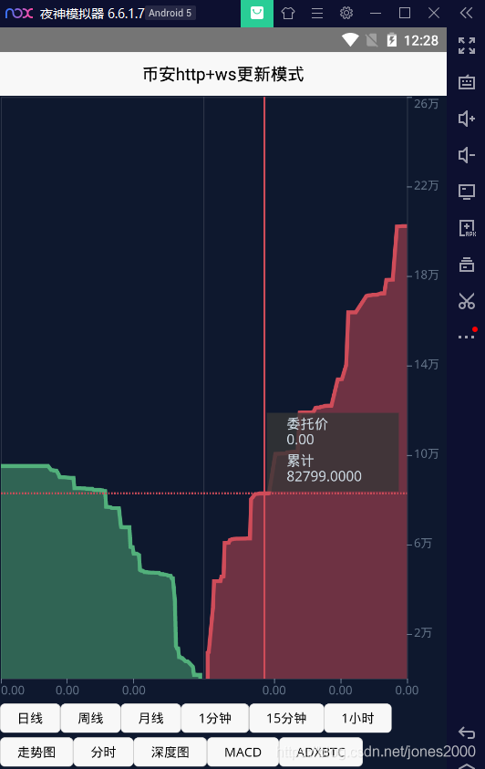

历史K线数据是通过https数据获取
最新数据更新可以使用2种方式
历史K线数据接口文档

ws最新数据获取接口文档

币安官网接口地址介绍
K线和实时更新这2个接口,目前文档上来看是不需要鉴权的。
demo里面使用的地址
更新数据ws地址为wss://stream.binance.com/stream
历史Kixan数据地址为 https://www.binance.com/api/v1/klines
这个2个接口需要梯子才能访问,在测试demo的时候需要确保测试的机器能访问这2个地址,或者通后台中转。
功能：
购买可以联系QQ 48274798 备注购买demo源码
demo效果图




